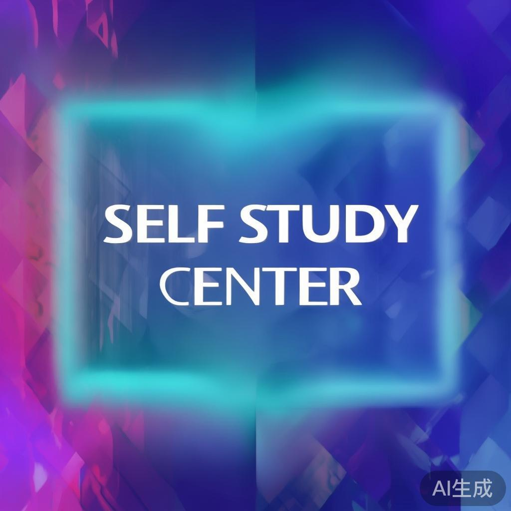

自学编程、UI 设计、网络安全、Python 办公自动化、软件设计 / 产品——每一条线都给你真实可验证的案例和分阶段学习路线。不画饼，只指路。
点开你想要的线，按阶段一步步来。路线是建议，不是承诺——快慢因人而异，关键是别停。
都是真实人物、真实经历、真实原文链接——点开卡片直达来源，自己看、自己判断。
新闻页已聚合 23+ 条真实 B站自学视频（编程 / 网安 / UI / 软设 / 自动化），站内直接播放，不跳 App。